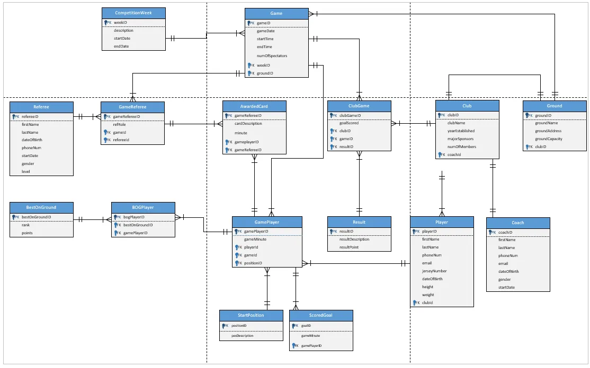

FreshMart data warehouse and sales dashboard
An end-to-end business intelligence build for a fictional Australian supermarket chain: five raw operational CSVs, audited and cleaned, modelled as a Kimball star schema, and surfaced as an executive dashboard.
to the dollar
one of six categories
audited and modelled
- 5 source tables
- Power Query audit
- Kimball star schema
- DAX measures
- Executive dashboard
The problem
FreshMart sells products to customers across twelve stores, and that activity was scattered across five disconnected operational files. Nobody could answer a question as basic as which regions and categories actually drive profit without manually stitching spreadsheets together, and the raw data was not clean enough to trust if they had.
The data
Five raw CSV extracts, modelled into a single star schema:
- Sales: 17,697 transaction lines, the fact table at the centre
- Customer: demographics, loyalty tier, postcode, membership date
- Product: 60 products with brand, category, subcategory, unit cost
- Store: 12 stores across four regions, with format and floor area
- Promotion: 21 promotions with type, dates, and discount rate
- Date: a generated calendar dimension for time intelligence
Cleaning it first
Every source table was audited in Power Query before it went anywhere near the model. The issues were real, not hypothetical:
- 15 duplicate customer records sharing a CustomerID with slightly different membership dates, removed by CustomerID
- Product categories spelled inconsistently across records (dairy, Dairy, Diary), standardised via value replacement
- Sale dates written three ways (YYYY-MM-DD, DD/MM/YYYY and DD-MM-YYYY), so the date was rebuilt from DateKey instead of trusting the text
- 93 sales rows referencing customer C9999, an ID matching no customer, mapped to “Not Applicable” in a clean column rather than silently dropped
- An N/A promotion type on the no-promotion record, relabelled, with blank dates kept null to preserve the date type
Dropping the 93 orphaned rows would have quietly understated revenue. Mapping them keeps the money in the totals while making the gap visible.
How it was modelled
The warehouse follows Kimball's four-stage method. Business process: retail sales. Grain: one row per product, per customer, per store, per date, per promotion, the most detailed level available, so no future analytical question is closed off. Dimensions: Product, Customer, Store, Promotion, Date. Facts: QuantitySold, UnitPrice, DiscountAmount, COGS.
Facts were classified deliberately: QuantitySold, DiscountAmount and COGS are additive; UnitPrice is non-additive and used only inside calculations, never summed. Getting that distinction wrong is how dashboards end up reporting a nonsense "total unit price".
What the data showed
-
Meat carries the business. It brings in 40.6% of revenue ($130,497) while selling about the same number of units as every other category, around 13,000 each. Seafood and beef alone are 24% of sales, so stock and promotion decisions on those two lines matter most.
-
Margin is not where profit differs. Gross margin sits between 28% and 29% in every region, category and store, against 28.67% overall. Profit follows revenue, so the way to grow it is selling more of the high-value lines, not moving sales to a “better margin” store.
-
South leads only because it has more stores. It earns 33.2% of revenue from four stores, but revenue per store is level across the chain: about $26,400 to $27,600 in every region. No region is underperforming.
-
Demand is spread evenly across the week. Each day carries between 13.5% and 15.4% of revenue, with Tuesday the highest, so staffing needs a steady roster rather than a weekend peak.
-
2024 grew 1.6% on 2023 ($106,353 against $104,674) but stayed below 2022. The comparison is built with DAX time intelligence, so growth is measured against the same period last year rather than a raw total.
How I worked
Clean it before you model it
On FreshMart I audited five source tables before touching the schema: 15 duplicate customers, three spellings of one category, dates written three ways, and 93 rows pointing at a customer who didn't exist. A dashboard built on unaudited data is confidently wrong.
What the numbers can’t tell you
- The data is fictional, generated for coursework. Margins this even across every store are a sign of generated data, so the findings show the method rather than a real chain’s performance.
- 93 sales can’t be tied to a customer. Their revenue is in every total, but they are missing from any customer or loyalty analysis.
- Only three years of data, so a year-on-year change of 1 to 2% can’t be told apart from normal variation.
- Gross profit counts product cost only. Wages, rent and delivery are not in the data, so this is not store profitability.
Links
